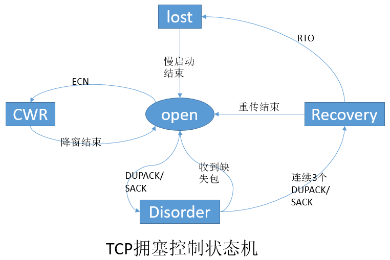

这篇博客主要介绍TCP拥塞状态(state)在不同场景的转换及通过flag怎么识别是正常的ACK还是SACK，这一块知识比较杂乱，仔细看这部分内容，还是因为研究timeout问题需要。
state
当sender收到一个ack时，Linux TCP通过状态机(state)来决定发送行为，是应该降低cwnd呢，还是保持cwnd不变，还是继续增加cwnd，这很重要。如果处理不当，可能会导致丢包或者timeout。
主要有五种状态，分别是：Open，Disorder，CWR，Recovery和Loss，下面对这五种状态做一个简要介绍，英文部分摘自这篇文章Congestion Control in Linux TCP，有兴趣的话可以下载下来读读。
Open
This is the normal state in which the TCP sender follows the fast path of execution optimized for the common case in processing incoming acknowledgements. When an acknowledgement arrives, the sender increases the congestion window according to either slow start or congestion avoidance,
depending on whether the congestion window is smaller or larger than the slow start threshold, respectively.
当网络中没有发生丢包，也就不需要重传，sender按照正常的流程处理到来的ACK。
Disorder
When the sender detects duplicate ACKs or selective acknowledgements, it moves to the Disorder state. In this state the congestion window is not adjusted, but each incoming packet triggers transmission of a new segment. Therefore, the TCP sender follows the packet conservation principle [Jac88], which states that a new packet is not sent out until an old packet has left the network. In practice the behavior in this state is similar to the limited transmit proposal by IETF [ABF01], which was suggested to allow more efficient recovery by using fast retransmit when congestion window is small, or when a large number of segments are lost in the last window of transmission.
当sender检测到dupack或者SACK，将会转移到Disorder状态，当处在这个这个状态中时，
cwnd将不做调整，但每收到一个dupack或SACK，sender将发送一个新包。
CWR
The TCP sender may receive congestion notifications either by Explicit Congestion Notification, ICMP source quench [Pos81a], or from a local device. When receiving a congestion notification, the Linux sender does not reduce the congestion window at once, but by one segment for every second incoming ACK until the window size is halved. When the sender is in process of reducing the congestion window size and it does not have outstanding retransmissions, it is in CWR (Congestion Window Reduced) state. CWR state can be interrupted by Recovery or Loss states described below.
当sender收到ACK包含显示拥塞通知（ECN），这个ECN由路由器写在IP头中，告诉TCP
sender网络拥塞，sender不会立马降低cwnd，而是每收到两个ACK才将cwnd减一，直到减为之前的一半，当cwnd正在减小cwnd，网络中有没有重传包时，这个状态就叫CWR，CWR可以被Recovery或者Loss中断。
Recovery
After a sufficient amount of successive duplicate ACKs arrive at the sender, it retransmits the first unacknowledged segment and enters the Recovery state. By default, the threshold for entering Recovery is three successive duplicate ACKs, a value recommended by the TCP congestion control specification. During the Recovery state, the congestion window size is reduced by one segment for
every second incoming acknowledgement, similar to the CWR state. The window reduction ends when the congestion window size is equal to ssthresh, i.e.
half of the window size when entering the Recovery state. The congestion window is not increased during the recovery state, and the sender either retransmits the segments marked lost, or makes forward transmissions on new data according to the packet conservation principle. The sender stays in
the Recovery state until all of the segments outstanding when the Recovery state was entered are successfully acknowledged. After this the sender goes back to the Open state. A retransmission timeout can also interrupt the Recovery state.
当sender连续收到多个（默认3）dupack时，意味着丢包了，这是sender会重传第一个未被ACK的包，并进入Recovery状态。在Recovery状态期间，cwnd的处理同CWR大致一样，cwnd不会降低，要么重传标记了lost的包，要么根据保守原则发送新包。直到网络中所有的包都被ACK，才会退出Recovery进入Open状态，Recovery状态可以被loss状态打断。
Loss
When an RTO expires, the sender enters the Loss state. All outstanding segments are marked lost, and the congestion window is set to one segment,
hence the sender starts increasing the congestion window using the slow start algorithm. A major difference between the Loss and Recovery states is that in the Loss state the congestion window is in increased after the sender has reset it to one segment, but in the Recovery state the congestion window size can only be reduced. The Loss state cannot be interrupted by any other state, thus the sender exits to the Open state only after all data outstanding when the Loss state began have successfully been acknowledged. For example, fast retransmit cannot be triggered during the Loss state, which is in conformance with the NewReno specification.
当超时后，TCP sender进入Loss状态，所有在网络中的包被标记为lost，cwnd重置为1，通过slow start重新增加cwnd，Loss与Recovery状态的不同点在于，cwnd会重置为1，但是Recovery状态不会，它会降到之前的一半。Loss状态不能被其它任何状态中断，只有当网络中所有的包被成功ACK后，才能重新进入Open状态。
下面是这五种状态的转换图

flag
这里flag的介绍基本上是照搬kernel，只有少数地方做了中文注释，因为英文注释的很清楚了，我也就不啰嗦了。
@kernel version 4.10.13 /net/ipv4/tcp_input.c
tcp_skb_cb
这一块也主要是搬运的kernel，然后做些简单的注释，这一块和上面的flag的mark真正怎么在kernel被标记的，有点复杂，我读了好久的code，还是感到有点模糊。
@kernel version 4.10.13 /include/net/tcp.h